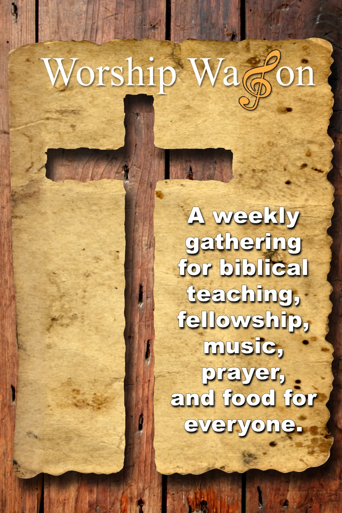

Our Mission

Our mission is to provide an opportunity for those living on the streets of Kansas City to participate in a weekly Christian church service. We are bringing a non-denominational praise and worship environment into the streets, right where they live.
There are existing churches and faith communities all around Kansas City today, in the downtown area, in the urban core, and in the suburbs. Some church groups even send out vans and buses in an effort to bring the poor and homeless off the streets and into their location each Sunday morning. We support and applaud those efforts, but homeless individuals are not flooding into those churches.
Why is that? Because a church building creates a sense of reverence, and an expectation of how a person should look and how they should act. When you are homeless, you do not always feel presentable. You rarely have access to bathroom and shower facilities. You could go to those churches, but you would likely feel out of place and self-conscious.
The Worship Wagon's simple mission, then, is to bring church to the streets. We set up faith communities in the environment where the homeless feel comfortable: at home, on the streets, and in their world.
The Challenge?
There is a fundamental problem underlying noble efforts to invite homeless individuals into our city's churches: most homeless individuals simply do not feel like they fit in, and they are not comfortable in a formal church setting.